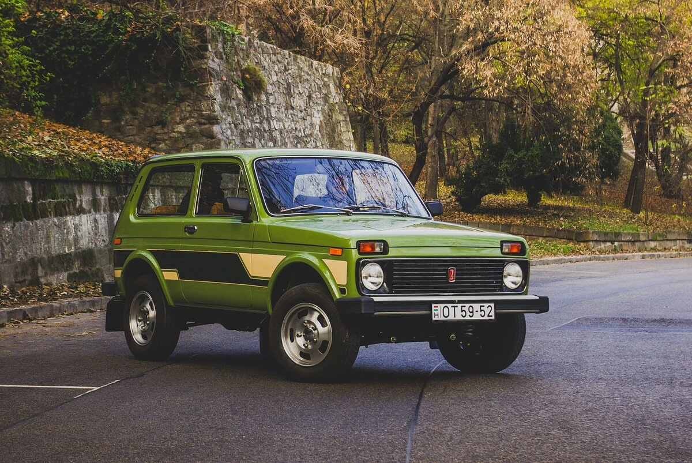
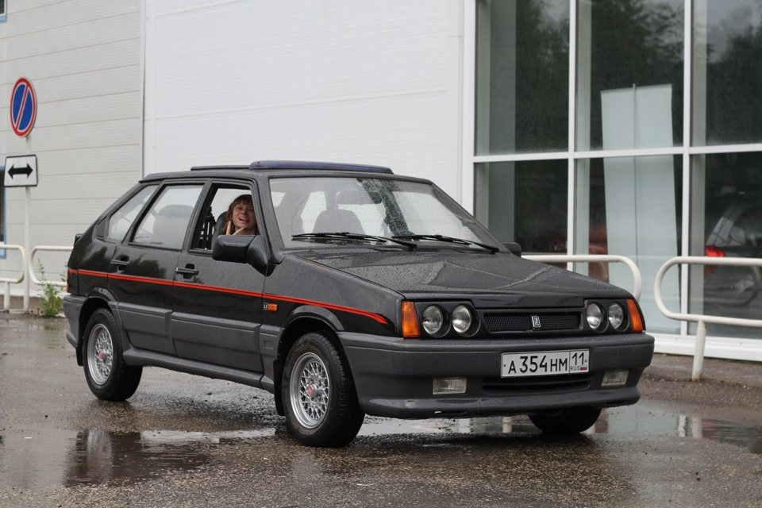
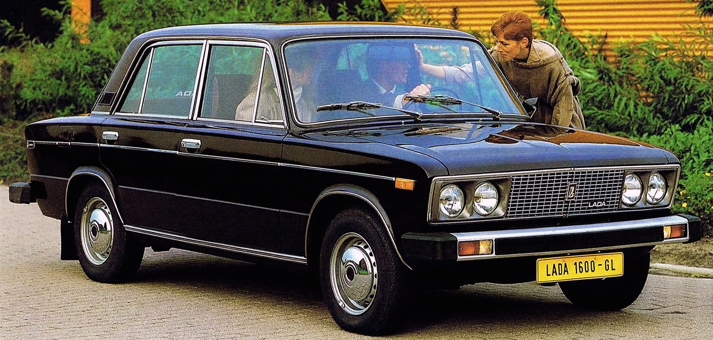
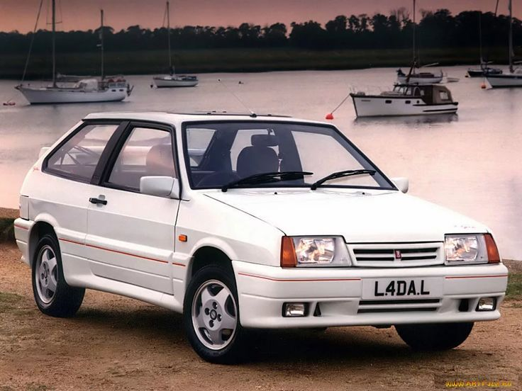
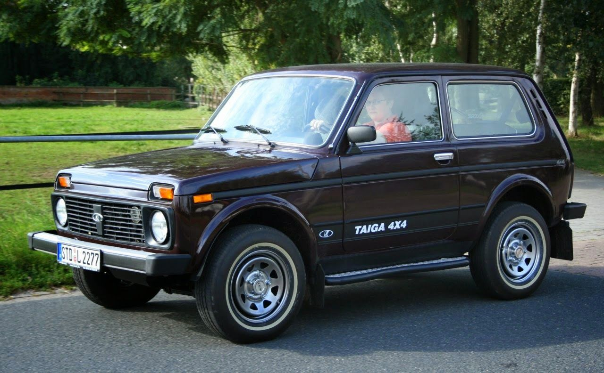
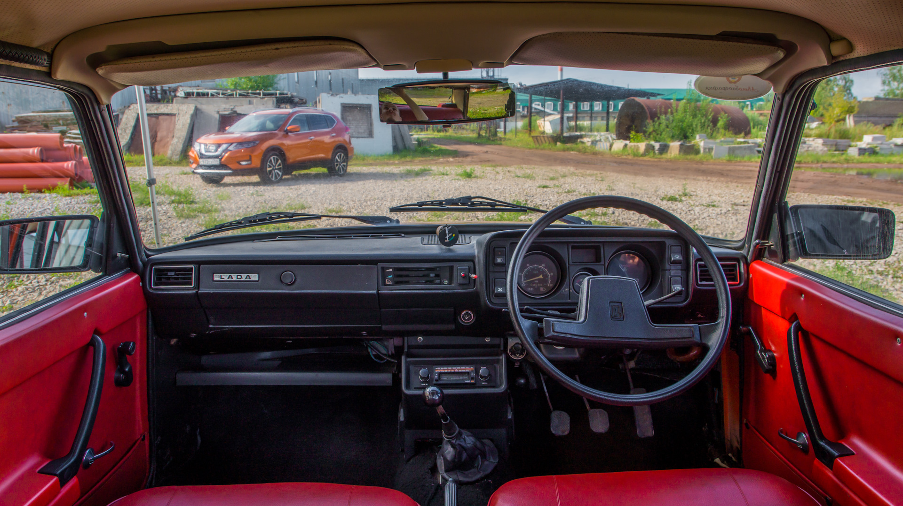
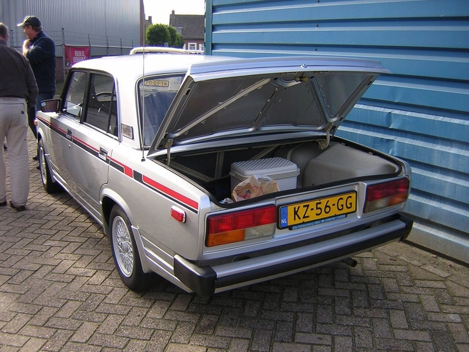

Экспортное название автомобиля выбрано Lada (от слова «ладья» — основного элемента логотипа и женского имени), в то время как на внутреннем рынке автомобиль продавался как Жигули (по названию гор). Первые автомобили Lada (ВАЗ-2101) выставлялись на экспорт с 1971 года. Среди стран, импортировавших Lada, были и страны из Совета экономической взаимопомощи (эти поставки частично покрывали стоимость отдельных видов комплектующих для завода), и покупавшие автомобили за свободно конвертируемую валюту.
В начале семидесятых на автомобили, произведённые в СССР, приходилось более 60 % всех денежных средств от экспорта продукции отечественного машиностроения. Вскоре эта доля увеличилась до 80 %. Спрос на автомобили Lada объяснялся относительно современной конструкцией, качеством изготовления, разумной ценовой политикой. Объём продаж в различных странах в известной степени зависел от наличия в них развитой сети дилеров, а также доступности СТО и необходимых запчастей. Хорошая адаптированность автомобилей к эксплуатации в регионах с суровым климатом сделала их популярными в странах Северной Европы: Финляндии, Швеции, Норвегии, Исландии. Так, в таксомоторных компаниях Будапешта немалую долю автомобилей составляла Lada, а эксплуатация этих автомобилей в интенсивном режиме оказалась наиболее эффективной.
Весьма большой популярностью пользовалась полноприводная «Нива», не имевшая на тот момент аналогов в своём сегменте. Одно время спрос на модель превышал возможности поставок и поддерживался появлением ряда тюнинговых версий, предлагаемых местными дилерами в экономически развитых странах мира. Помимо повседневной эксплуатации в городских условиях, «Нива» широко использовалась за рубежом как транспортное средство для егерей, врачей, фермеров, коммивояжёров и полицейских.
В середине 1980-х зарубежные рынки положительно встретили модернизированное семейство заднеприводных моделей Lada 2105/2107/2104. Во Франции в это время каждый четвёртый импортный автомобиль с кузовом «универсал» был Lada. Автомобили Lada можно было встретить в Азии, Африке, Латинской Америке, Канаде, Австралии и Океании. Сравнительно высокую популярность удалось завоевать и переднеприводным автомобилям Lada семейств Samara, Samara-2, а также моделям «десятого» семейства.
К 1990 году 25 % продукции автозавода уходила на экспорт, бо́льшая часть которого приходилась на страны Западной Европы. По утверждению журнала За рулём, на 1991 год только дилер из ФРГ «Дойче Лада» хотел заказать 100 тысяч машин у АвтоВАЗа, но это количество директивно было снижено руководством завода до 40 тысяч автомобилей.
В 1995 году был образован центр сборочных комплектов (ЦСК) для дальнейшего закрепления продукции «АвтоВАЗа» в том числе на зарубежных рынках. На ЦСК возлагалась ответственность за полный цикл внешней сборки, включая изучение потенциальных регионов сбыта и контроль выполнения автосборочными заводами планов выпуска. Спустя три месяца после создания центра были осуществлены первые поставки сборочных комплектов ВАЗ-21093 в Финляндию на фирму Valmet. Там за время действия соглашения (с 1996 по 1998 год) было собрано 14 048 автомобилей, большая часть которых была реализована в странах Западной Европы.
В 2000 году на Украине при поддержке концерна «Укрпроминвест» на Луцком автозаводе была организована сборка модели ВАЗ-21093. Вскоре сборкой вазовских моделей занялись ещё два украинских предприятия — в Херсоне и Кременчуге, а в четвёртом квартале 2001 года первые автомобили Lada 2107 начали собирать в Египте. В 2002 году в список предприятий внешней сборки вошла казахстанская компания «Азия Авто», которая занималась сборкой полноприводных автомобилей Lada 4Х4. Конец 2003 года был ознаменован для «АвтоВАЗ» открытием сборочных производств ещё в двух точках мира. Предприятие «Оферол» приступило к выпуску автомобилей Lada 4X4 в Монтевидео (Уругвай), а на Украине на «АвтоЗАЗе» началась сборка автомобилей Lada Samara. Вскоре сборка автомобилей Lada 4X4 была организована в столице Эквадора городе Кито на предприятии «Аймеса».
В 2007 году в ближнем зарубежье начались продажи автомобиля Lada 2170 (под этим заводским индексом на экспорт до настоящего времени поставляется Lada Priora). Тогда же «АвтоВАЗ» отметил юбилей своей внешнеторговой деятельности — отгружен 7-миллионный экспортный автомобиль, которым стал Lada 1118 (седан Lada Kalina).
Начиная с 2010 года география поставок автомобилей Lada охватывает страны СНГ (более 90 %) и Европы (3—5 %), а также ряд государств Африки и Латинской Америки (не более 1,5—2 %). Продажа автомобилей Lada за рубежом организована через официальные дилерские сети импортёров «АвтоВАЗ». Реализацией Lada занимаются около 20 официальных импортёров, которые сотрудничают в общей сложности более чем с 200 местными дилерами. Среди стран СНГ самым ёмким рынком изначально была Украина, куда поставлялись как готовые автомобили, так и машинокомплекты. С начала введения ряда ограничительных таможенных пошлин этой страной, а затем сформировавшийся здесь экономический и социально-политический кризис резко снизили поставки автомобилей практически всех марок, ранее продававшихся на Украине.
На начало второго полугодия 2014 года самым ёмким экспортным рынком автомобилей Lada является Казахстан.
Галерея некоторых экспортных автомобилей:





